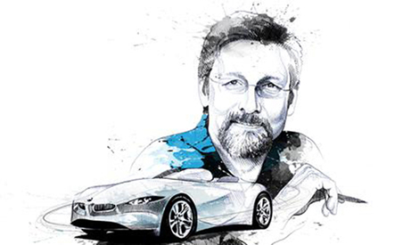
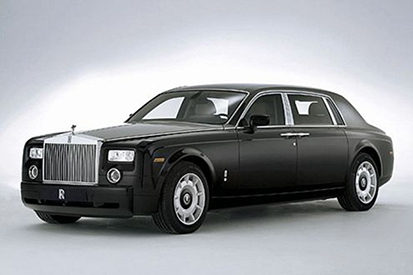
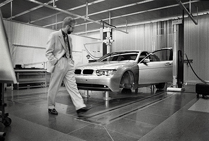

Christopher Edward "Chris" Bangle is a world famous automotive designer from America. Bangle achieved worldwide acclaim as the chief designer for BMW from 1992 to 2009. At BMW, Bangle was responsible for the designs of the various BMW series vehicles, MINI vehicles, and Rolls-Royce vehicles. Prior to BMW, Bangle worked as an automotive designer and chief designer respectively at Opel and Fiat.
Chris Bangle was born in Ravenna, Ohio, U.S. on October 14, 1956. He attended the Art Center College of Design in Pasadena, California and earned his Bachelor of Science degree in Transportation Design.
Chris Bangle has made a very large impact on the automotive deisng industry. His designs have often garnered intense controversy from peers and polarizing comments due to bold styling themes and adventurous approaches. His work is often highly controversial, with the most significant example being the BMW E65 7 series from 2002. However, despite being sited as one of the top 50 worst cars of all time in Time Magazine, the E65 7 series became the best-selling 7 series of all time. During his time at BMW, BMW overtook Mercedes Benz as the global leader in premium car sales. Bangle has often referred to the work of architect Frank Gehry as a major influence in his own designs.
  